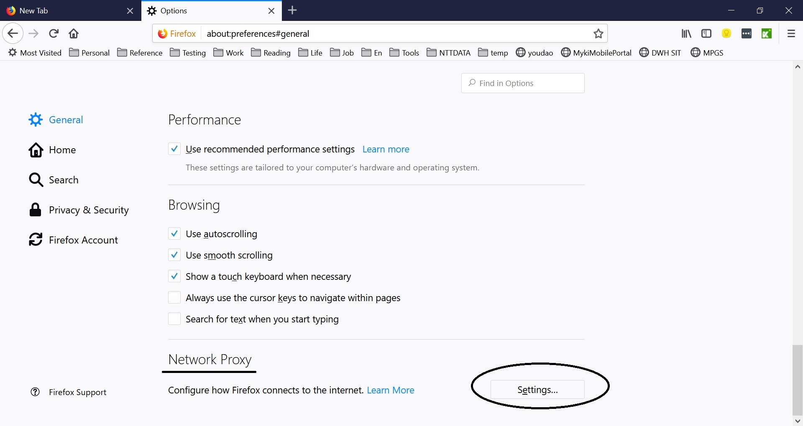
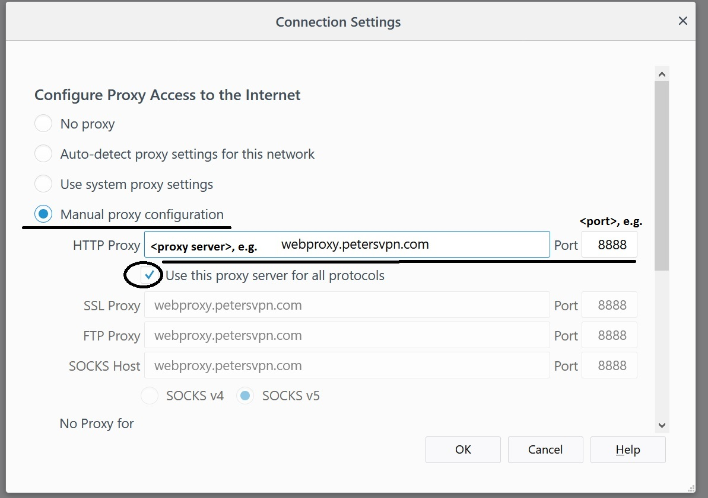

Proxy Server: webproxy.petersvpn.com
Port: 8888
Notes:
This is basically for PC users (Windows and Mac).
It is tricky to use web proxy on mobile devices and not detailed here.
How to Config:
Download and install Firefox (火狐) from Internet, and follow the screenshots below.
Find Options, and go to General / Network Proxy / Settings.

Select Manual proxy configuration, and enter proxy server and port.
